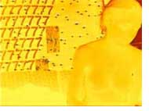

Image and Text, page 3
Curious about the Sisyphus ball, I click the Coda section and find out more about the Sisyphus project, including the name Sisyphus. Just as Sisyphus rolls a stone up the summit for eternity, Sisyphus, the computer-controlled kinetic device, rolls a ball in the sand. I also follow the outgoing link to the Greek myth. In the Greek myth, gods condemned Sisyphus, a mortal who loved life, to the punishment of rolling a stone up a hill for eternity in the underworld. Once he reaches the top of the hill with the stone, it rolls back to the bottom and down he goes to roll it up again to the summit. The myth can be interpreted in variety of ways, but what is relevant in the present context is more along the lines of the interpretation that is given by Albert Camus—again an outgoing link from the Sisyphus site. Camus is not so much interested in Sisyphus' rolling up the rock to the top of the summit and, in his hard labor, becoming one with the rock. He is fascinated by the pause when Sisyphus reaches the summit and starts to descend downwards to get ready to roll up the stone again. This moment of pause, Camus says, is the moment of full awareness or consciousness for Sisyphus and the moment when he overcomes his fate. The digital sand etchings traced by the ball operated by Sisyphus are the realization of this state of pause, an aesthetic pause that takes the beholder beyond the preoccupation with mundane rituals of life to a heightened state of awareness.
Of the thirty-three images included in the hypermedia work, eleven are of Ho's digital sand etchings (from the Sisyphus project), which are woven into the fabric of the ballad. Sand sculptures or etchings, the most ephemeral of all built environments, can be toppled by a mere touch or blown away by a whiff of the wind and are meant to remind the beholder of the transience of existence. I once again follow the outgoing link to the Sisyphus project from the Coda section and, under Concept, come across the following statement: "Picture a sand garden in the spirit of the Zen gardens of Japan. A digital system conducive to meditation, peace and serenity: where beauty and nature stroll hand in hand through the rhythm of human existence..." The spirit of this statement shapes various readings of the ballad.
Interestingly, there is more to this ballad than the use of sand as a medium and a concept to reflect on human experience. In Ana Voog's Goldshow images, the woman's body itself becomes a medium for artistic expression. The images are from "Anacam," which is Voog's 24/7 video performance project. The images titled Goldshow 1, 3, and 7 show a hazy picture of a woman, sitting up or lying down, against a granular sandy background. The images are bathed in gold, yellow and yellowish white hues. Clicking the images takes the reader into the verses that are descriptions of Sand. Thus there are contrasting images of Sand, those that are associated with the Ho images, which evoke austerity, simplicity and tranquility, and those associated with the Ana Voog images of a sensuous woman's body, Ana's body, revealed through the lens of a webcam. The daily rituals of living are turned into aesthetic occasions for viewers who view the live images as they are posted on the Anacam website. Strickland et al thus create a poetics of sand by weaving the images that embody fragility, simplicity, beauty, transience, sensuality, and dreaming into the ballad of Sand and Harry Soot.
The first two verses of the Ballad state:
0
Sand was a gourd fanatic
and she played
 a glass
a glass
 marimba.
marimba.
 1
1
Harry Soot loved to listen.
The image that accompanies the first two verses on the first screen of the ballad is one of Ho images called Three Rocks, which is also the logo for the Sisyphus project. The "one rock" of Sisyphus myth is transformed into "three rocks" of the Sisyphus project. Three rocks in the sand etching are emblematic of the theme of the ballad that centers around the player, the listener and the song or in other words, the reader, the writer, and the work. The ballad is about language, words as well as navigation in art as well as life. In Japanese sand gardens, the beholder strategically sits outside the garden in a position of rest so as to resonate with the tranquility and peace that is embodied in the sand garden.
The word "listen" in the above verse is linked to the following verse:
0
Twirly languid blue-eyed blue pearls clearly not Sand.
Down on the fourth harmonic she simply singly for a second
stood, so symmetric, second subsequent swiftly sliding side-
riding slamjamming shivering switching—
1
Soot calls it "searching."
The above incomprehensible verse seems to portray the shifting and changing nature of Sand. Sand is not "blue-eyed" like Soot as we find out in another verse. This verse thus alludes to the ocular metaphors, which dominated western discourse for centuries. The rise of ocular metaphors in the 17th century had a lot to do with the development of the science of optics that made it possible to see both the large and the small more accurately. But the sole reliance on the eye also eliminated other perspectives and other ways of seeing. The eye was thus severed not only from the body but also from the world in which it was located. As the reader searches through the jumble of sliding and slithering words, the eyes fall on the accompanying image of a kinetic light sculpture by Friedlander called Spinning String Light Form. This is what Friedlander says about this work from his "Visual Music" series: "In this illustration, you see a spinning string vibrating in harmony, this description sounds like a musical instrument, but it is a light sculpture. The vibrating form is a superposition of the second and fourth harmonic: a 'visual chord.' " Sand's movement and shape shifting is the visual music: a transposition of the sense of seeing into the sense of hearing. >>